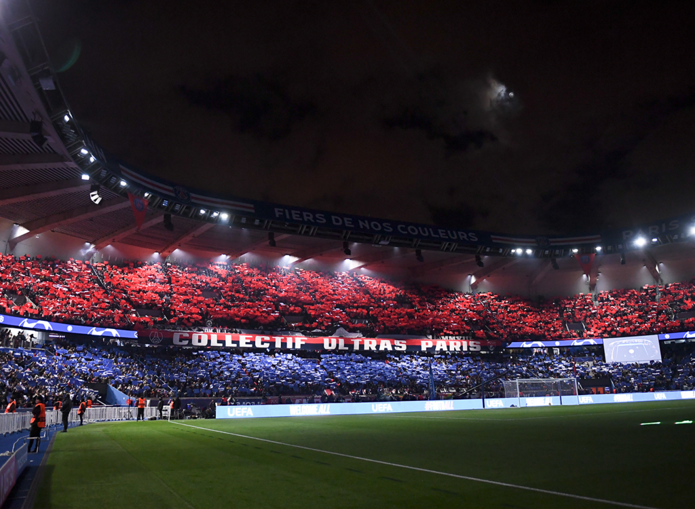

Voici le stade officiel du Paname FC, où se jouent tous nos matchs à domicile. Un lieu mythique pour tous les passionnés du club. D'une capacité de 48000 places il permet d'accueillir de nombreux supporters du club.
Juste ci dessous les ultras du Paname le CUP Collectif Ultra Panamiens une organisation de plus de 15000 supporters ultra du club toujours présents dans le gros rendez-vous.